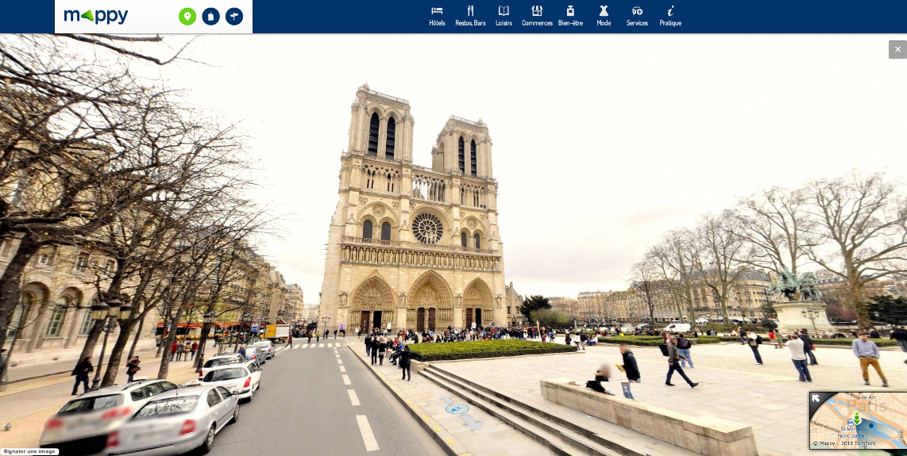
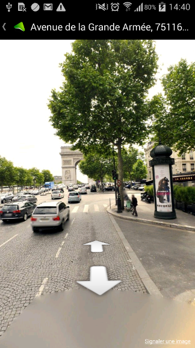
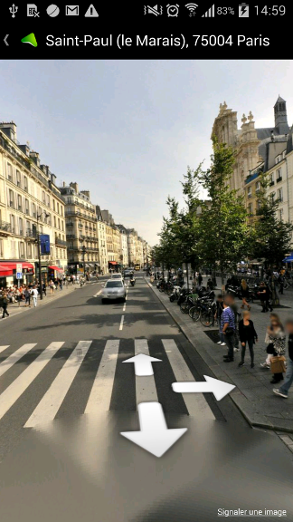
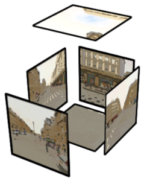
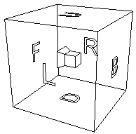
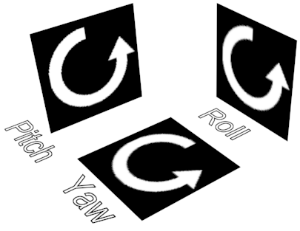
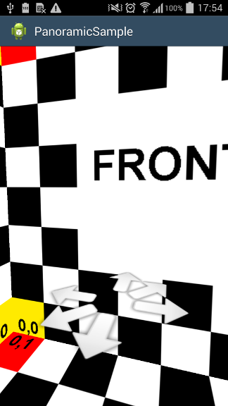
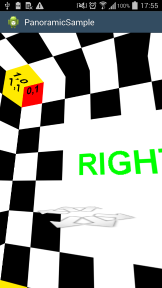
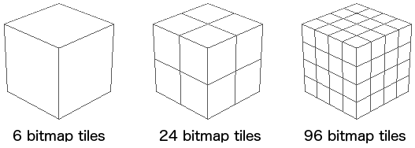
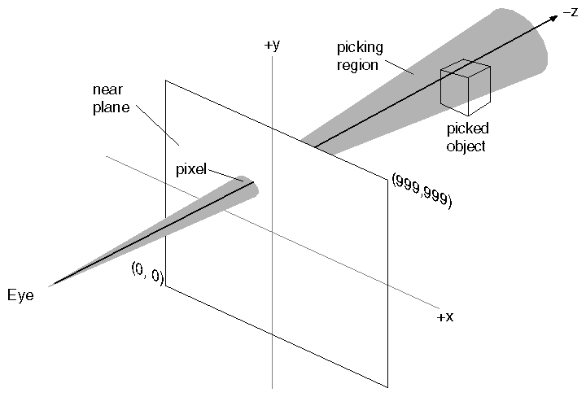

Mappy offers StreetView-like immersive experience to explore France cities. The web interface uses a Flash player to display the cubic projections of "360" panorama images.

To provide the same feature on Android devices, we looked at existing solutions. Two we came accross were :
- krpano HTML5 Viewer works in modern mobile browsers (supported browsers, WebViews).
- PanoramaGL Android library handles many projections (spherical, cubic and cylindrical), JSON configuration, transitions, gyroscope and more.
Still, these two did not exactly match our needs :
- Wide device support, starting with Android 2.3, while krpano requires latest Android browsers or
WebViews. - StreetView-like gesture control (rotate, zoom), while PanoramaGL handles "Pan-Rotate" as a speed vector we felt not as easy to control. It may be configurable but we didn't find out how.
- Click on 3D way arrows, while PanoramaGL provides hotspots with visual feedback on click. Still, these are 2D bitmap layers inside textures, as far as we understood.
 
Available on Google Play, Mappy for Android.
Let's describe the main technical aspects we implemented building our own PanoramicLib.
Cubic projection
To display 360 panoramas with cubic projection, we texture the inner faces of a simple cube mesh (6 square faces, 2 triangles each).
  
In the OpenGL 3D space, both cube and camera center are (x=0, y=0, z=0). The camera rotates on itself, using pitch and yaw angles. This is important because the cubic projected textures are valid only if seen from the cube center. Zoom is done just by changing the Field Of View angle (the cube mesh is not scaled).
 
PanoramicLib sample using "target" textures for debugging
In PanoramicLib source :
PanoramicGestureListenerclass handles scroll and fling gestures to set camera orientation.PanoramicScaleGestureListenerclass handles pinch to zoom gesture.
Progressive resolution loading
Our panorama images are provided through Web services. For faster loading, low resolution bitmaps (128 * 128) are first downloaded. Higher resolutions are progressively downloaded, updating the cube faces to sharper textures. For high resolutions, faces are divided in multiple tiles of 512 * 512 pixels.

Ideally, using tiles would lower the amount of downloaded data because client application could :
- Download tiles only for visible faces,
- Download max resolution tiles only for zoomed parts
... but we didn't push this far for now.
In PanoramicLib source, the PanoramicTile interface is responsible for handling a bitmap tile and a tiny PanoramicTileIdentifier structure describing which face of the cube the tile belongs. The "split factor" (PanoramicTileIdentifier.getSplitFactor()) is number of times the face is splitted.
- splitFactor = 0 : 1 tile per face,
- splitFactor = 1 : 4 tiles per face,
- splitFactor = 2 : 16 tiles per face.
PanoramicTileIdentifier.getPosition() gives the position of tile inside the face (0 is top-left).
Tiles can be added any time during cube rendering. The PanoramicCubeMesh will consider face, splitfactor and position to add the bitmap on to the corresponding texture. A higher split factor is considered as a higher resolution. The cube will adapt to use the tiles with the highest split factor.
The face splits are not polygons. The cube mesh vertices never changes and each face always uses only two triangles. The multiple tiles of a face are actually merged in a single texture. While resolution goes up, new texture buffers are allocated and tile bitmaps are progressively drawn inside (using GLUtils.texSubImage2D()).
Interactive elements with ray-picking
To provide click-able 3D arrows as in Google StreetView and move from a panorama to a neighbor one, we needed to detect the click. In 3D space.
"Picking is the task of determining which screen-rendered object a user has clicked on." (Wikipedia)
The idea with ray-picking is to compute a 3D ray between the camera and the point the user clicked. For each polygon in the scene, you test if the ray intersects it, resolving the "line-plane intersection" equation. The closest intersected polygon belongs to the clicked object.

Image from VSG, Visualization Science Group - Open Inventor Mentor, 2nd Edition - Volume I
The picking code comes from Ivan Schuetz "Android OpenGL Picking" GitHub project. It refers to Gregory Beauchamp "Ray picking on Android" article.
We adaptated the code to take the picking out of the OpenGL thread. In PanoramicLib, we notify the Activy on way arrow click to load next panorama view. This has to run on the UI thread.
In Ivan Schuetz example, ray intersect computing is done in ExampleGLRenderer.onDrawFrame(GL10 gl) (source), calling ExampleGLObject.draw(GL10 gl, Ray ray) on each scene object. Intersections are logged to Android LogCat from there (source). It runs on the OpenGL thread because it requires the OpenGL context to grab projection and modelview matrixes to compute ray and projected objects coordinates.
To handle intersection computing on the UI thread, we saved the current OpenGL matrixes in a member of each ArrowMesh instance, on each draw, using MatrixGrabber class (source).